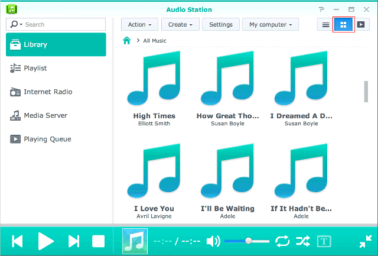

Vue d'ensemble
Grâce à Audio Station, vous pouvez classer, parcourir et lire la musique stockée sur votre Synology NAS sur Internet. Audio Station prend également en charge une grande sélection de types de fichiers, de sorte que vous puissiez écouter votre musique dans le format de votre choix. Vous pouvez également télécharger DS Audio, une application mobile qui complète Audio Station,et qui vous permet d'accéder à la musique de votre Synology NAS lorsque vous êtes en déplacement.
1. Installation d'Audio Station
- Accédez à Centre de paquets et recherchez Audio Station. Cliquez sur Installer.

2. Stocker des fichiers audio dans le dossier music
- Accédez à File Station > music et cliquez sur Transférer.
- Sélectionnez les fichiers que vous souhaitez transférer dans votre dossier music depuis l'ordinateur local.

3. Rechercher de la musique
Après avoir transféré les fichiers musicaux, vous pouvez les lire et les parcourir sur Audio Station. Si vous souhaitez être en mesure d'accéder à vos fichiers musicaux et de les parcourir lorsque vous ne vous trouvez pas sur le réseau local, il est recommandé d'activer QuickConnect dans Panneau de configuration > QuickConnect. Si vous n'avez pas de compte Synology, vous pouvez en configurer un en quelques minutes et fournir un QuickConnect ID à votre DiskStation. Lorsque cette option est activée, vous pouvez vous connecter à DSM et accéder à votre musique depuis n'importe où. Vous pouvez également utiliser votre QuickConnect ID pour vous connecter à DS Audio afin de vous éviter d'avoir à mémoriser votre adresse IP.
3.1 Bibliothèque
La bibliothèque contient de la musique dans le dossier partagé music ou tout autre dossier indexé de votre Synology NAS. Dans l'onglet Bibliothèque, votre musique est classée en catégories afin de vous fournir différentes options pour y naviguer facilement en fonction de vos besoins et de vos préférences. En outre, cela vous permet de rechercher facilement tous les morceaux dont vous avez envie. Vous pouvez cliquer sur chaque catégorie pour effectuer votre recherche ou sélectionner la catégorie que vous souhaitez rechercher dans le menu déroulant de la barre de recherche.

3.2. Modes d'affichage
Les icônes situées dans le coin supérieur droit d'Audio Station vous permettent de commuter entre les différents modes d'affichage dans lesquels vous pouvez parcourir votre bibliothèque musicale.
- Vue en liste vous permet d'afficher vos morceaux sous forme d'une liste, avec le nom du morceau, l'artiste, l'album, la durée du morceau, numéro de la piste et l'évaluation.
- Pochette affiche le nom de la piste, le nom de l'album et la pochette de l'album. 
- File d'attente de lecture affiche la file d'attente de lecture en plein écran avec les pochettes d'album, le titre des morceaux ou les paroles.


4. Partage public
La fonction de partage public Audio Station vous permet de partager des morceaux avec le public en vous fournissant un lien que vous pouvez envoyer aux personnes qui sont ou ne sont pas dans votre réseau ou qui n'ont pas un Synology NAS. Une fois qu'ils ont le lien, ils peuvent écouter les morceaux.
4.1. Partage de morceaux avec le public
- Cliquez droit le ou les morceaux que vous voulez partager et sélectionnez Partager avec le public.
- Il existe deux options lorsque vous partagez des morceaux avec le public :
- Si vous sélectionnez un morceau unique à partager, dans la boîte de dialogue qui s'affiche, cochez la case en regard de Partager avec le public pour activer le lien de partage.
- Si vous sélectionnez plusieurs morceaux à partager, une liste de lecture est créée. Vous pouvez lui donner un nom et spécifier une période de validité pour le lien en cochant la case en regard de Personnaliser la période de validité et en cliquant sur OK.


- Copiez le lien et collez-le pour la personne avec qui vous voulez partager la liste de lecture, ou cliquez sur Aller au lien pour consulter le lien directement.

5. Classer et lire de la musique sur des périphériques mobiles
DS audio fonctionne sur les appareils iPad/iPhone/iPod touch et Android, ainsi que les téléphones Windows. L'application est disponible gratuitement sur Apple App Store, Google Play et Windows Phone Store. Vous pouvez également scanner le code QR ci-dessous pour la télécharger instantanément.